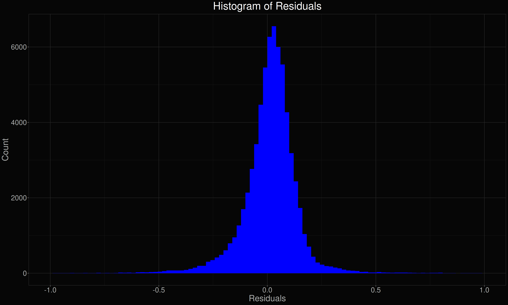

Positive Seed Dilution Series
Purpose
In order to determine the effect of seed concentration on the kinetics of RT-QuIC, I performed a series of 10-fold dilutions of a known CWD-positive lymph node sample. After fitting the curves, I should be able to see if any of the coefficients are affected.
Design
- Log\(_{10}\) seed dilution factors:
- -3, -3.26, -3.52, -3.78, -4.04, -4.3, -4.57, -4.83, -5.09, -5.35, -5.61, -5.87, -3.13, -3.39, -3.65, -3.91, -4.17, -4.43, -4.7, -5.22, -5.48, -4.96, -5.74, -6
- Temperature: 42°C
- Shaking speed: 700rpm
- Reaction time: 72 hr
- Substrate concentration: 0.1 mg/mL
- Substrate: HaPrP(90-231)
Data
| Name | df_ |
| Number of rows | 249 |
| Number of columns | 29 |
| _______________________ | |
| Column type frequency: | |
| factor | 3 |
| list | 1 |
| logical | 1 |
| numeric | 24 |
| ________________________ | |
| Group variables | None |
Variable type: factor
| skim_variable | n_missing | complete_rate | ordered | n_unique | top_counts |
|---|---|---|---|---|---|
| sample | 0 | 1 | FALSE | 1 | P: 249 |
| wells | 0 | 1 | FALSE | 95 | A01: 3, A02: 3, A03: 3, A04: 3 |
| rxn | 0 | 1 | FALSE | 3 | 202: 90, 202: 82, 202: 77 |
Variable type: list
| skim_variable | n_missing | complete_rate | n_unique | min_length | max_length |
|---|---|---|---|---|---|
| data | 0 | 1 | 249 | 5 | 5 |
Variable type: logical
| skim_variable | n_missing | complete_rate | mean | count |
|---|---|---|---|---|
| crossed | 0 | 1 | 1 | TRU: 249 |
Variable type: numeric
| skim_variable | n_missing | complete_rate | mean | sd | p0 | p25 | p50 | p75 | p100 | hist |
|---|---|---|---|---|---|---|---|---|---|---|
| dilutions | 0 | 1 | -4.34 | 0.85 | -6.00 | -4.96 | -4.30 | -3.65 | -3.00 | ▅▇▆▇▇ |
| MPR | 0 | 1 | 7.23 | 2.52 | 3.05 | 5.15 | 6.79 | 8.84 | 16.33 | ▇▇▅▂▁ |
| QR | 0 | 1 | 0.93 | 0.08 | 0.64 | 0.87 | 0.96 | 1.00 | 1.00 | ▁▁▂▂▇ |
| MS | 0 | 1 | 2.22 | 0.89 | 0.54 | 1.51 | 2.15 | 2.77 | 4.99 | ▅▇▇▂▁ |
| TtT | 0 | 1 | 25.86 | 12.56 | 8.45 | 16.34 | 21.35 | 32.32 | 66.11 | ▇▆▂▂▁ |
| RAF | 0 | 1 | 0.05 | 0.02 | 0.02 | 0.03 | 0.05 | 0.06 | 0.12 | ▇▇▆▁▁ |
| AUC | 0 | 1 | 301.37 | 144.80 | 45.02 | 198.08 | 289.18 | 402.83 | 691.25 | ▅▇▆▃▁ |
| max_time | 0 | 1 | 69.25 | 0.00 | 69.25 | 69.25 | 69.25 | 69.25 | 69.25 | ▁▁▇▁▁ |
| growth_scale | 0 | 1 | 2.22 | 0.89 | 0.54 | 1.51 | 2.15 | 2.77 | 4.99 | ▅▇▇▂▁ |
| time_to_growth_mid | 0 | 1 | 25.30 | 11.81 | 8.25 | 16.50 | 21.25 | 31.75 | 62.75 | ▇▇▂▂▁ |
| time_to_min_deriv2 | 0 | 1 | 26.69 | 11.87 | 9.25 | 17.75 | 22.50 | 33.00 | 63.75 | ▇▇▃▂▁ |
| time_to_growth_max | 0 | 1 | 30.11 | 11.66 | 15.00 | 21.25 | 26.25 | 36.25 | 65.50 | ▇▆▂▂▁ |
| peak_norm | 0 | 1 | 6.48 | 2.46 | 2.18 | 4.51 | 6.14 | 7.95 | 15.73 | ▆▇▅▁▁ |
| max_equillibrium | 0 | 1 | 7.18 | 2.51 | 3.05 | 5.11 | 6.79 | 8.84 | 15.73 | ▇▇▅▂▁ |
| min_equillibrium | 0 | 1 | 6.00 | 2.15 | 2.18 | 4.30 | 5.64 | 7.36 | 12.91 | ▅▇▅▂▁ |
| max_decay | 0 | 1 | 0.71 | 0.76 | 0.00 | 0.07 | 0.47 | 1.10 | 3.55 | ▇▃▂▁▁ |
| min_decay | 0 | 1 | -0.48 | 0.69 | -3.08 | -0.71 | -0.17 | 0.00 | 0.00 | ▁▁▁▂▇ |
| equillibrium | 0 | 1 | 6.69 | 2.33 | 3.05 | 4.89 | 6.15 | 8.02 | 13.19 | ▇▇▅▂▂ |
| time_to_equillibrium | 0 | 1 | 59.63 | 11.82 | 13.25 | 52.25 | 66.00 | 69.00 | 69.25 | ▁▁▂▂▇ |
| peak_decay | 0 | 1 | 0.22 | 1.31 | -3.08 | -0.71 | 0.37 | 1.10 | 3.55 | ▂▆▇▆▁ |
| time_to_decay | 0 | 1 | 29.51 | 13.98 | -6.50 | 18.25 | 28.00 | 43.25 | 54.25 | ▁▅▇▅▇ |
| time_to_decay_mid | 0 | 1 | 44.87 | 9.43 | 16.50 | 39.50 | 44.50 | 50.00 | 67.38 | ▁▂▇▃▂ |
| decay_slope | 0 | 1 | 0.02 | 0.06 | -0.21 | -0.02 | 0.02 | 0.05 | 0.39 | ▁▇▆▁▁ |
| decay_scale | 0 | 1 | 0.04 | 0.04 | 0.00 | 0.02 | 0.04 | 0.05 | 0.39 | ▇▁▁▁▁ |
Results
Residuals
Worst fits
These fits represent the 12 worst fits based on the pseudo-R\(^2\) metric. They aren’t necessarily bad fits, but are those that least resemble the emperical data.

Best fits
These fits represent the 12 best fits based on the pseudo-R\(^2\) metric.

Effect of seed dilution on model coefficients
I plotted the parameters as a function of initial seed concentration. The initial seed concentration really has an effect on \(b_1\) (basically t\(_\text{lag}\)) which is expected, and to some extent S1 (~ maximum fluorescence). Interestingly, S2 becomes more negative as the seed concentration increases (i.e. more seed = more dampening effect). Also interestingly, there seems to be no effect on either a1 or a2 (i.e. the steepness of the inflection point).